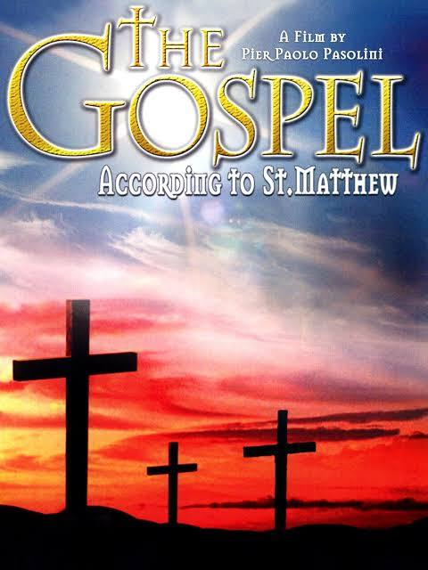

Course: Jesus in the Movies
Lecture #4: The Gospel According to St. Matthew (1964)

THE GOSPEL ACCORDING TO MATTHEW: Pier Paolo Pasolini (1964)
Pier Paolo Pasolini seems like an unlikely person to bring the Jesus story to the screen. Tho a prolific poet, novelist, screenwriter and filmmaker, he was also an avowed Marxist and atheist. He was even prosecuted for insulting the Roman Catholic Church for one film in 1962. He was eventually murdered in 1975 by a young man who belonged to the underclass he vividly depicted in his writings and movies.
This film made its debut in the U.S. in Feb. 1966, first with English subtitles and later (the version I have) dubbed into English. The "St." was added in the title for its English distribution, against Pasolini's wishes. It received an “A 1” classification from the NCOMP. It was dedicated to Pope John XXXIII.
Pasolini's film takes an alternative approach to the Jesus story but charts new territory by pursuing the option of using a single gospel, Matthew, to narrate the life of Jesus.
Firstly, whether knowingly or not, Pasolini takes an approach favored by biblical scholarship in his day. The 1960's was the period of a growing emphasis on the theology of the individual gospel writer. "Redaction criticism" as it is called studies how a gospel is organized, what was included, and excluded, as a means of understanding the theology of the author.
Secondly, this film is in distinctive contrast to the most recent Jesus films of that day. It was shot in black and white in a style often described as neo-realistic, suggestive of the documentary film. It almost looks like films of the silent era.
The filming took place in the barren wasteland of southern Italy in Calabria with every location chosen by Pasolini himself. The local populace were chosen as players. His mother was the aged Mary and a Spaniard, Enrique Irazoqui, Jesus.
Pasolini says of his film: "I, a non-believer, was telling the story through the eyes of a believer" or again "My film is the life of Christ plus two thousand years of storytelling about the life of Christ."
The viewer hears music from a variety of eras: the mournful sounds of Odetta's rendering of "Sometimes I feel like a Motherless Child" (in English), the rhythms of the Congolese "Missa Luba (a catholic mass scored for African voices and drums), and the moving refrains of Bach's "St. Matthew Passion", among others.
This film avoids the imaginative subplots and created conversations that mark so many of the Jesus films that preceded it. Virtually all incidents and dialogue in the film have their basis in the gospel text. There is no omniscient narrator and voice over is used only for words from the gospel or Old Testament quotes in the infancy narratives and baptism.
However, it is not just a literal rendition of Matthew. Pasolini has rearranged the exact sequence and leaves out certain others. for example, there are 5 discourses in Matthew which Pasolini has incorporated into his film unevenly or not at all. The sermon on the mount does find its way into the film as a distinct entity but with different shots of Jesus throughout, implying different locations.
He telescopes the call of the 12 disciples into one incident and does not include any sayings material, from the parables of the kingdom. He also leaves out any of the end-time discourses thus making Jesus message more this worldly.
The passion account and resurrection Pasolini covers quite thoroughly. The resurrected Jesus does appear and gives the "great commission" so this is yet another film ending with... "I shall be with you always. . . . . ."
Pasolini did retain the underlying shape of Jesus ministry. He has Jesus’ ministry falling into 2 periods: the early period in Galilee, and the later period in Jerusalem, with Peter's "confession" and the three "passion predictions" as transitional markers.
The Galilean period opens with Jesus Baptism, with many miracles, teachings, etc leading up to the questioning of the disciples. Peter answers, "thou art the Christ, the son of the living God" Then Jesus blesses peter and calls him "the rock". Pasolini later divulged that he removed these words of the so-called investiture of Peter after the initial editing, but because the Catholic Church has seen in them a basis for the authority of Peter and his Papel successors, Pasolini returned them to the script as a gesture of goodwill toward his Catholic friends.
The Jerusalem period begins with Jesus’ entry into the city and cleansing the temple. The story of the wicked vinedresser and the "woes" to the scribes and pharisees which lead the Jewish authorities to put him to death.
THE PORTRAYAL: JESUS AS PROPHET AND SAGE
This film shows Jesus as coming in fulfillment of the messianic promises made to Israel by God in the Hebrew scriptures. Jesus comes across as a hurried, harried teacher with unusual, even miraculous, powers. Above all, tho, Jesus appears as a social critic whose words and deeds often run afoul of those whom he encounters. He is at odds with his social environment and especially the religious authorities, in both Galilee and Jerusalem.
As mentioned, all the eschatological discourses are left out, making Jesus a man of the moment, uttering words of condemnation, not one speculating @ the end of the world. Jesus appears, above all, as a prophet and sage.
Scholars have used both of these categories, prophet and sage, as the basis for interpreting what Jesus was like as an historical figure. During the "third quest", the most recent period of Jesus research, there has also appeared an emphasis on Jesus as a sage--a Jewish cynic who intended to undercut the social pretensions and hierarchical ideologies of his contemporaries. John Dominic Crossan The Historical Jesus: the Life of a Jewish Mediterranean Peasant (1991), Burton L. Mack, The Lost Gospel: the Book of Q and Christian origins (1994), and Robert Funk Honest to Jesus (1996) all see Jesus in this way.
No Jesus film more exclusively places the responsibility for Jesus' death on the Jewish religious leaders. The trial before Caiaphas, both in the night and again in the morning are covered and follow closely the gospel account.
While the appearance before Pilate has been greatly abbreviated from the gospel account. Pilate simply announces: "Today is the paschal feast...I shall release a prisoner.... Barabbas or Jesus, Whom they call the Christ?" He then disavows any responsibility for the fate of this "just man". Ironically, Pasolini the Marxist has completely de-politicized the crucifixion.
Pasolini seems to imply that the responsibility for Jesus' death extends to all humanity. As Jesus hangs on the cross, the screen goes dark, and a voice repeats the words from Isaiah 6:9-10
Hearing you will hear, but not understand and seeing you will see but not perceive.
For the heart of this people has been hardened and with their ears they have been hard of hearing...
Light returns and Jesus utters his only words from Matt. "My god, my god....."
Although Pasolini says using this Isaiah passage was one of his few liberties, he does no comment on the intended meaning.
Pasolini tries to downplay in his own way the obvious antisemitism of this gospel. In the hearing before Pilate, Pasolini does not have the Roman governor wash his hands nor does he have the Jewish crowds ask that Jesus blood be on themselves and on their children (27:24-25).
Pasolini states that "analogy" was foundational for his bringing the Jesus story to the screen. He states that he was not trying to reconstruct the past but rather to find some equivalence between that past and his own present. This led him away from Palestine to Calabria for the site of his filming.
The logic of analogy draws and equivalence between the religious establishment of ancient Palestine and the religious establishment of contemporary Italy--that is to say, the present day church, specifically the Roman Catholic Church.
Therefore, the re-mythicized story of Jesus as portrayed in this film confronts the Roman Catholic Church even as Jesus challenged the religious leaders of his day. The Jesus of this film is a subversive character who undercuts ecclesiastical authority in the modern world. Ironically, if this film was meant as a critique of the church, surprisingly little notice of this critique came from the various institutional churches, Catholic or Protestant.
Show clips
AN HONORED FILM IN ITS OWN DAY:
The Gospel According to Matthew was entered in the Venice film festival in 1964 amid pickets of both Neo-fascist and catholic church people. It received a special jury prize, but it was pointed out by one critic that to be commercially successful it would take church endorsement.
Endorsement was forthcoming in the form of many honors conferred upon it by the church--by the churches of Europe and the U.S., Catholic and Protestant. In 1964, the Vatican council held a special screening. Both the Catholic film office and the National council of churches gave special awards to the film recognizing it "for its retelling in imaginative cinematic terms one version of the NT story, thus revealing Christ's life and passion as a realistic and human experience for contemporary audiences."
Both Catholic and Protestant magazines seemed to love the movie. much of the applause received by Pasolini's alternative adaption of the Jesus story stemmed from its immediate comparison with those pretty and pretentious harmonizing epics that were its contemporaries.
Representatives of the secular press were less charitable. One wrote: "Pasolini's "The Gospel according to St. Mathew" was so static that I could hardly wait for the loathsome young man to get crucified. Why do filmmakers think that's a good story anyway?"
Increasingly, Jesus films were expected to meet the same cinematic standards as other films. Newsweek liked this film, but Time's critic didn't. However, though some criticism was leveled, the New Republic called it "the best film about Jesus in film history."